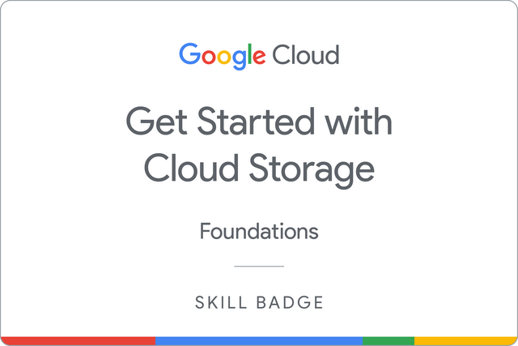

This week's focus is on Cloud Storage. Cloud Storage allows world-wide storage and retrieval of any amount of data at any time. You can use Cloud Storage for a range of scenarios including serving website content, storing data for archival and disaster recovery, or distributing large data objects to users via direct download.
In this workshop you will:
i- Create cloud storage buckets using gcloud commands
ii- Create a Cloud SQL instance with a database
Note: you must not use your personal Google account details for Cloud Skills Boost, you only use the temporary credentials supplied in the lab, these credentionals are only valid for ONE use and will change if you need to run the lab again. See example below:
Login to your Cloud Skills Boost account and complete the Cloud Storage: Qwik Start - Cloud Console lab here.
Lab 3b
Login to your Cloud Skills Boost account and complete the Loading Data into Google Cloud SQL lab here.
Earn a skill badge by completing the Get Started with Cloud Storage quest, where you learn how to create a Cloud Storage bucket, how to use the Cloud Storage command line, and how to use Bucket Lock to protect objects in a bucket.
A skill badge is an exclusive digital badge issued by Google Cloud in recognition of your proficiency with Google Cloud products and services and tests your ability to apply your knowledge in an interactive hands-on environment. Complete this Skill Badge, and the final assessment challenge lab, to receive a digital badge that you can share with your network.

That is all for this week! If you did not manage to finish this workshop then please ensure you complete it in your own time.